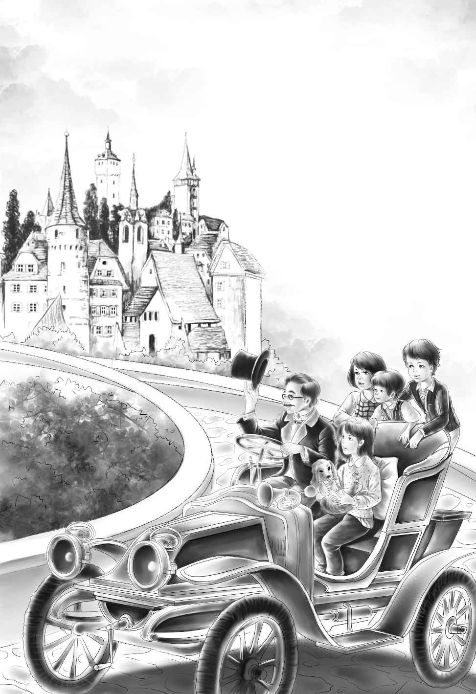

The children’s grandfather wanted them to like his house．He wanted them to live with him all the time．So he had made over some of the rooms just for them．
The children went with him in his car to see the house．When the car stopped in front of it， Henry cried in surprise， “Do you live here， in this beautiful house？”
It was a beautiful house．It was very big， with many trees and flower gardens around it．
“You may live here， too， if you like my house，” remarked his grandfather， watching Henry’s face．

The house was beautiful inside， too．There were flowers everywhere．There were maids everywhere．The children went up to the bedrooms．
“Oh！” cried Jessie．“This is Violet’s room．”
It really was Violet’s room．There were violets on the wallpaper．The bed was white with a violet cover．On the table were flowers．
“What a beautiful room！” cried Violet， sitting down in a soft， pretty chair．
All the children shouted when they saw Benny’s room．The wallpaper was blue and covered with big rabbits and dogs and bears．There were a rocking horse and a tool box and little tables and chairs．And an engine stood on a track， with cars almost as big as the little boy himself．Benny ran over to the engine．
“Can I run this train all day？” he asked．He sat down on the floor by the engine．
“Oh， no，” said Henry．“You are going to school as soon as it begins．”
His grandfather laughed．“That is right， my boy．You will like school．You will learn to read．”
“Oh， I can read now，” said Benny．
In Jessie’s room they found a bed for Watch．It was on the floor by her bed．Watch got in at once， sniffed at the pillow， turned around three times， and lay down．
“He likes it，” said Jessie．“He will sleep by me．”
Just then the children heard a doorbell ring．A maid came up to find Mr．Alden．
“A man to see you，” she said， “about the dog．”
Now when Jessie heard the word dog， she was frightened．She was afraid it was about Watch．
“They won’t take Watch away？” she whispered to Henry．
“No， indeed！” said Henry．“We’ll never， never give him up．”
Henry and Jessie and the other children went down with their grandfather to see the man， and Jessie was more frightened than ever．Watch did not growl at the man．He jumped up on him delightedly．
“You see， he was my dog，” said the man．“But I sold him to a lady， and he ran away from her that very day．I have to turn him over to the lady I sold him to．”
“How do you know he is the same dog？” asked Mr．Alden．
“Oh， he is my dog，” said the man．“You see he knows me， and he has a small black spot on this foot．But someone has cut his hair on one side．”
Benny looked．He found the black spot on Watch’s foot．
“I never saw that spot before，” said Henry．
“I will give you what you want for the dog，” said Mr．Alden．“The children love him．They want to keep him．”
“But I sold him to a lady，” said the man．“I must take the dog to her．”
Then Henry said，“Maybe she will want to change to another dog when she sees his hair．If she will agree to take another dog， will you let my grandfather have this one？”
“Yes， I will，” said the man．
“Let’s go and ask her， Grandfather，” said Benny．“She will let Jessie have Watch．He is her dog．She took the thorn out of his foot．”
The man told Mr．Alden where the lady lived， and they all started out to find her．She was a very pretty young lady， and she asked them to sit down．
But Benny could not wait．He said， “Please let us keep Watch！ I want him， and Jessie wants him， and we didn’t know he was your dog．”
“What do you mean？” asked the lady， laughing．“Who is Watch？”
“This dog is Watch，” answered Henry．“A man came to Grandfather’s house today and told us that he had sold the dog to you．When Watch ran away from you， the day you bought him， he came to us．He had a thorn in his foot， and Jessie took it out．”
Watch looked up at the lady and wagged his tail．When she looked at him， she began to laugh．
“Look at his side！” she said．“Who cut his hair？”
“I’m sorry，” said Henry．“Benny did that one day with Violet’s scissors．”
“I am not sorry，” said the lady， laughing．“He looks so funny．And you want to keep him？ Is that it？”
“Oh， yes，” said Jessie eagerly．“The man will let us have him， if you will take another dog．”
“Don’t be afraid，” said the young lady．“You may keep the dog．I can change to another one．”
“Oh， thank you！ You are nice！” cried Benny．
He ran to the lady and climbed up in her lap before anyone could stop him．
“I’d like to keep you， Benny， in place of the dog，” laughed the lady， putting her arms around him．
How happy the children were to have Watch to keep！ Mr．Alden gave the money to the man at once．
Four happy children sat with their grandfather around the Alden dinner table that night．The maids smiled in the kitchen to hear the children laugh．And the children laughed because Watch had a chair at the table beside Jessie and was really waited on by a maid．
Would you ever think that four children could be home-sick in such a beautiful house？ Jessie was the first one to wish for the old boxcar．
One day she said， “Oh， Grandfather， I’d like to cook something once more in the dear old kettle in the woods．”
“Go out in the kitchen， my dear，” said her grandfather．“The maids will help you．You can cook all you want to．”
Jessie liked this， but it was not like the old days in the boxcar．
Then one day Benny said， “Grandfather， I wish I could drink my milk out of my dear old pink cup．”
His grandfather began to think．He had some pink cups， but they were not so dear to Benny as his old cracked one．
At last Mr．Alden said， “I am going to give you children a surprise．”
“Is it very nice？” asked Benny．
“No， not very，” laughed his grandfather．“It is not pretty at all．”
“When will it come？” asked Benny．
“It will come today．You children must all go over to Dr．Moore’s and stay， until the surprise comes．”
“What can it be？” wondered Violet．
Her grandfather laughed．“I hope you will like it，” he said．“It is very heavy．”
The children were glad to see sweet Mrs．Moore and the kind doctor again．They stayed until Mr．Alden said the surprise was ready．Then Dr．Moore and his mother went back with them in the big car．
Mr．Alden was as happy as a boy．He took them by the garage and through the big gardens．At last they came to a garden with a fountain in the middle and trees around it．Near the fountain was the surprise．It was the old boxcar！
The children ran over to it with cries of delight， opened the door， and climbed in．All the things were in place．Even the old dead stump was there to step on．
Here was the old knife which had cut butter and bread and vegetables and firewood and string．Here was Benny’s pink cup， and here was his bed．Here were the big kettle and the blue tablecloth．Here were the pitcher and the old teapot．And here was the dinner bell which the children had made from an old tin can．
Benny hung it on a tree with a string and rang it over and over again with a spoon．Watch rolled on the floor of the car and barked and barked．Then he began to sniff at everything．
“He’s looking for the bone he buried，” laughed Benny．
“How they love the old boxcar！” said Mrs．Moore．“I like to see them so happy．”
“Thank you for the surprise， Grandfather，” said Violet．“We’ll never go away from you again．”
“I hope not， my dear，” said Mr．Alden．“We’ll all live happily ever after．”
And so they did．